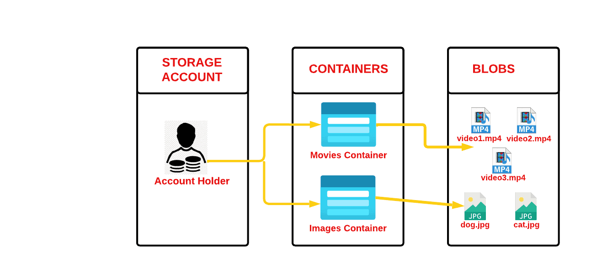

What is Microsoft Entra ID?
You likely know "Active Directory" from on-premise (local) Windows environments. The biggest mistake you can make is assuming Entra ID (formerly Azure AD) is just Active Directory in the cloud. It is not.


- Active Directory (On-Premise) is a directory service based on LDAP and Kerberos. It relies on servers called Domain Controllers. It is hierarchical, meaning you have Organizational Units (OUs) inside Domains, inside Trees, inside Forests. When you hack AD, you are often attacking the Kerberos protocol or trying to access the NTDS.dit database on a Domain Controller.
- Entra ID is entirely different because it is a web-based identity service designed for the internet. It uses web protocols like HTTPs and APIs (REST). There are no Domain Controllers to hack. There are no OUs or Forests.
Entra ID is completely different.
Entra ID is "flat." Think of it as a massive spreadsheet or SQL database of Users, Groups, and Applications. You cannot use tools like Mimikatz to dump hashes from Entra ID in the way you would a Domain Controller.


When you attack Entra ID, you are attacking web APIs, manipulating tokens (OAuth/OIDC), or abusing misconfigurations in applications, not exploiting the Kerberos protocol.

It is a massive, flat list of three main things:
- Users: The actual humans (or potential attackers) logging in.
- Groups: Collections of users for easier management.
- Applications (Service Principals): This is crucial. In the cloud, applications are treated like users. They have their own identities and passwords (secrets).
Entra ID speaks the languages of the web: HTTP and APIs. It uses modern authentication protocols like OAuth2 and OIDC (OpenID Connect).


Entra ID Licensing Levels (Capabilities & Constraints)
The security posture of a target tenant is dictated by their wallet. Microsoft unlocks specific features based on the license tier (Free, P1, or P2). Identifying this early helps you predict defenses.


Free Tier
- Capabilities: Core identity management, SSO, basic security defaults.
- Attacker View: These tenants lack advanced logging and automated detection. Reconnaissance here is quieter, and complex defenses like Conditional Access are often missing.
Premium P1 (The Corporate Standard)
- Key Features:
- Conditional Access (CA): The "If/Then" engine for logins (e.g., "If User comes from unknown IP, block").
- Self-Service Password Reset (SSPR): Allows users to reset passwords without IT help.
- Attacker View: This is where you'll likely face MFA challenges and Conditional Access policies that block suspicious logins.
Premium P2 (High Security)
- Key Features:
- Identity Protection: Automated threat detection and risk-based conditional access.
- Privileged Identity Management (PIM): Just-In-Time access to admin roles.
- Attacker View: This is the hardest target. Expect aggressive lockouts, aggressive token monitoring, and difficult-to-bypass MFA.
The Core Function of Entra ID
The single job of Entra ID is Authentication. It answers the question: "Is this user who they say they are?"
Entra ID acts as the bouncer for the Microsoft cloud. When a user attempts to log in, Entra ID checks the username, the password, and potentially the MFA status or device health. If the user passes these checks, Entra ID issues a digital ticket called a Token.
This Token is the most valuable artifact for an attacker. It contains claims (facts) about the user, such as their name, email, and the roles they hold. Once Entra ID issues this token, its job is essentially done for that specific login event. It hands the token to the user, and the user then presents that token to other services (like Outlook or Azure) to prove their identity.
Entra ID essentially says, "I have verified this person. Here is their badge."
Managed Identity
Technically, a Managed Identity is a special type of Service Principal (an Application account) in Entra ID that is tied to an Azure Resource.
The Problem it Solves (User View):
Imagine you are a developer. You built a web app that needs to access a Database. To login to the database, your app needs a username and password (credential).
- Old Way: You write the username/password in a config file or hardcode it in the source code.
- The Risk: Developers accidentally upload these config files to GitHub, and hackers steal the credentials.
- The Managed Identity Solution: Azure creates an automatic identity for the App itself. You tell Azure, "This Web App is allowed to talk to this Database." No passwords exist. The App asks Azure for a token, Azure sees it really is the App, and hands over the token.
The Opportunity it Creates (Attacker View):
A Managed Identity is a "Token on Tap." When you compromise an App Service (Web App), you can query the Internal Metadata Service (IMDS) at `http://169.254.169.254` to get a fresh token for that App's identity.
You effectively "clone" the App's identity without needing any passwords.
Azure Resource Hierarchy
Understanding this hierarchy is critical for both user and attacker perspectives.
Tenant Root Group (The Source):
The absolute highest level of the Azure Resource hierarchy. It sits above all Management Groups and Subscriptions. It mirrors the scope of the Entra ID Tenant.
- User View: You almost never assign permissions here for day-to-day work. This level exists primarily for Compliance. If the Chief Information Security Officer (CISO) wants to ensure that nobody in the entire company can spin up a VM in a non-compliant region, they apply a "Policy" at this root level.
- Attacker View: This is the "God Mode" of Azure Resources. If you compromise an account with User Access Administrator or Owner rights at the Tenant Root, you effectively own every piece of infrastructure the company rents from Microsoft.
Management Groups:
These are logical folders used to organize Subscriptions. You can nest them (folders inside folders) to match your corporate structure.
- User View: This allows Shared Governance. Instead of assigning permissions on 50 separate subscriptions, you group them into a Management Group and assign permissions once.
- Attacker View: This creates a massive Blast Radius. If I compromise credentials with rights on the "Production" Management Group, I inherit access to every Production subscription.
Subscription:
This is the Billing and Access Control boundary. You cannot run a Virtual Machine without a Subscription.
- User View: This separates Cost and Environments. You usually see a "Development Subscription" and a "Production Subscription".
- Attacker View: This is our primary target for Data Mining. Finding credentials for a "Reader" on a subscription is highly valuable.
Resource Group (RG):
A logical container. Everything must live in a Resource Group.
Resource:
The distinct object itself. A Virtual Machine is a resource. A specific Network Interface Card is a resource.

- User View: This is the tool you use to do your job. You log into the VM to patch it.
- Attacker View: This is the Execution Point. Accessing the Resource gives us the data inside it.
If you have Contributor access on the Subscription, you inherit that access on every Resource Group and every Resource beneath it.
Inheritance:
This is your best friend as an attacker. If an admin gives you "Contributor" access on a Subscription, you automatically become a Contributor on every Resource Group and every Virtual Machine inside that subscription.
The Two Role Systems (RBAC)
Because Entra ID (Identity) and Azure Resources (Infrastructure) are two different systems, they use two completely different sets of permission roles.
Entra ID Roles (Identity Roles)
These roles control the directory/identity. They define what you can do to users, groups, and applications.
- Global Administrator: The highest privilege. Can manage everything in Entra ID.
- User Administrator: Can create and manage users and groups.
- Application Administrator: Can manage application registrations.
- Privileged Role Administrator: Can manage role assignments.
Azure Resource Roles
These roles control access to resources like VMs, Storage, and Key Vaults.

- Owner: Full access to all resources, including delegating access.
- Contributor: Can manage all resources but cannot grant access.
- Reader: Can view resources but cannot modify them.
How Azure Decides Access (The Logic Flow)
When you attempt an action in Azure (like restarting a server), the system runs a specific logic flow to determine "Yes" or "No."
Access is Additive (The Keychain Rule)
Azure permissions are cumulative. You never lose access by gaining a more restrictive role; you only gain more keys.
- Scenario: Your user account is assigned the Reader role directly. Your user is also a member of the "IT Admins" group, which has the Contributor role.
- Result: You are a Contributor. Azure adds all your permissions together.
- Attacker View: Do not stop enumerating after finding a direct user assignment. You must enumerate every Group the user belongs to.
Azure Attribute-Based Access Control (ABAC)
While RBAC is binary (you have the role or you don't), ABAC allows permissions based on specific conditions.
- The Mechanism: Administrators attach a Condition to a Role Assignment.
- User View: "User Bob is a
Blob Data Reader, BUT only if the Blob has the index tagProject = 'Blue'." - Attacker View: This acts as a Hidden Filter. You may compromise an account that lists permissions yet still get
Access Deniedon sensitive files because the resource tags do not match the ABAC condition.
The Operator's Toolkit
Because Azure architecture is split into two pillars (Identity and Resources), the tools provided by Microsoft are also split.
Infrastructure Tools (For the "Offices")
These tools interact with the Azure Resource Manager (ARM). You use them to list Storage Accounts, restart VMs, or read Key Vaults.
- Az CLI (
az): This is the preferred tool for offensive operations. It is cross-platform (Python-based) and outputs JSON data. The CLI allows filtering data on the fly using JMESPath queries.- Command Example:
az vm list
- Command Example:
- Az PowerShell: This is the standard administrative tool for Windows-focused environments. It uses PowerShell cmdlets.
- Azure Portal: The web-based GUI. Good for learning but slow for enumeration.
Identity Tools (For the "Bouncer")
These tools interact with Microsoft Graph API, which controls Entra ID.
- Mg Graph PowerShell (
Connect-MgGraph): The modern way to manage Entra ID. Replaces the old Azure AD PowerShell module. - MS Online (
Connect-MSOL): Legacy module for older Entra ID features.
Security Reconnaissance: AzureHound and BloodHound
In complex cloud environments, access control is defined by a network of relationships, or "edges," between objects. Manually auditing these connections is virtually impossible. Security mastery necessitates adopting tools that leverage graph theory to visualize these complex control chains.
- AzureHound Collector: A penetration testing utility, frequently weaponized by threat actors, designed to collect data about all securable objects and their control relationships within both the Azure (ARM) and Microsoft Entra ID environments.
- BloodHound Visualization: BloodHound is the visualization and analysis engine. It ingests the data collected by AzureHound and applies graph theory principles to map and identify all possible attack paths. This capability allows a security team to instantly identify the shortest privilege escalation path from a low-level compromised user account to high-value targets, such as a Global Administrator, Subscription Owner, or a sensitive data store.
The value of this tooling lies in operationalizing the attacker's perspective. The complexity of cloud environments often allows for indirect privilege escalation. For instance, an attacker does not necessarily need direct access to a key vault if they can exploit an indirect path, such as gaining Contributor rights over a Resource Group that contains a Service Principal, where that Service Principal, in turn, possesses high-level Entra ID roles. BloodHound illuminates these complex "control chains", exposing key vulnerabilities, including:
- Privilege escalation opportunities within Azure RBAC.
- Lateral movement paths across identity boundaries.
- Identities capable of modifying the configuration of high-value objects, such as principals who can add secrets to an Application Object (AZMGAddSecret edge).
Understanding and utilizing tools like AzureHound are essential for proactive defense, allowing security architects to remediate hidden, high-risk relationships before they can be exploited.
Essential Tools Comparison
Az CLI vs Az PowerShell vs MgGraph:
- Az CLI (
az): Cross-platform, Python-based, fast JSON output, ideal for scripting and automation - Az PowerShell: Windows-centric, rich object model, great for complex operations
- MgGraph PowerShell: Unified API access to all Microsoft services, supports Graph API directly
Tool Selection for Red Teams:
- Use Az CLI for rapid enumeration and JMESPath filtering
- Use Az PowerShell for complex Azure resource management
- Use MgGraph for Entra ID enumeration and user/group management
- Use AzureHound + BloodHound for attack path analysis
Discovery and Reconnaissance Fundamentals
In an assumed breach scenario, we typically start with credentials but should perform reconnaissance before logging in. Understanding the target environment first helps identify attack vectors and escalation paths.
Unauthenticated Reconnaissance
Unauthenticated reconnaissance aims to gather information without valid credentials. This is critical because:
- RBAC Bypass: Public DNS records expose Azure resources without authentication
- Information Gathering: Understand the target before attempting access
- Attack Planning: Identify high-value targets and potential escalation paths
Tenant Discovery
The first step is identifying if an organization uses Azure:
- DNS Enumeration: Look for Azure-related domains (azurewebsites.net, cloudapp.net, etc.)
- Tenant ID Discovery: Use login pages to extract tenant identifiers
- User Enumeration: Check if specific email domains exist in Azure AD
Subdomain Enumeration
Azure services create public DNS entries:
- *.azurewebsites.net: Azure App Services
- *.cloudapp.net: Azure Cloud Services
- *.azureedge.net: Azure CDN
- *.windows.net: Azure Storage Accounts
Tools like MicroBurst can automate subdomain enumeration through permutation scanning.
The Dual-Role Model: Entra ID RBAC vs Azure RBAC
A fundamental architectural concept is the distinction between the two distinct RBAC systems:
- Microsoft Entra ID RBAC: Operates only on identity objects within the Entra ID tenant. Governs administrative capabilities over features like privileged identity management, user and group lifecycle, and application registration.
- Azure RBAC: Governs access to Azure resources (virtual networks, storage accounts, resource groups, subscriptions, and management groups). Roles like Owner, Contributor, Reader define what actions an identity can perform on specific resources.
Security Implication: This separation reinforces Zero Trust - a high-privilege user in Entra ID does NOT automatically gain access to Azure resources.
Global Administrator and Access Elevation
The Global Administrator (GA) role is the highest identity privilege in Microsoft Entra ID, allowing management of all aspects of Entra ID and other Microsoft services.
Critical Security Control - Access Elevation:
- A GA can elevate their access across the tenant's resource management plane
- When elevated, the GA is assigned User Access Administrator role at root level (/
- This grants ability to view all resources and assign any role across all subscriptions
- This makes the GA account the highest-value target in the environment
Mitigation: Use Privileged Identity Management (PIM) to enforce Just-In-Time (JIT) and Just-Enough-Access (JEA) models.
Identity and Access Control in Entra ID
Effective access control in Azure necessitates a deep understanding of the different identity types and the dual, non-overlapping Role-Based Access Control (RBAC) systems managed by Microsoft Entra ID and Azure Resource Manager (ARM).
The Spectrum of Identities
Microsoft Entra ID distinguishes between several types of identities used for access:
- Member Users: Full members of the organization with standard permissions to register applications, manage profiles, and invite guests
- Guest Users: External users with restricted directory permissions
- Service Principals: Application identities used for automated access and integrations
- Managed Identities: Automatically managed service principals that eliminate credential management
- Enterprise Applications: SaaS applications that users can SSO into
Application Identity Deep Dive
Understanding the relationship between Application Objects and Service Principals is fundamental:
- Application Object: The global template of the application in the registering Entra ID tenant
- Service Principal: The local instance of the application in each tenant where it's used
Security Implication: Compromising an Application Object's credentials can affect all Service Principals derived from it.
The Microsoft Entra ID Identity Plane
Microsoft Entra ID serves as the centralized identity and access management (IAM) solution for the entire Microsoft ecosystem and beyond. Azure, by contrast, is the comprehensive cloud platform utilized for consuming infrastructure services such as virtual machines, storage, databases, and serverless functions.
Key Concepts:
- Tenant: The highest-level organizational and security boundary for all identity objects
- Users: Human identities that can authenticate and receive permissions
- Groups: Collections of users that can be assigned permissions collectively
- Service Principals: Application identities used for automated access
- Managed Identities: Automatically managed service principals for Azure resources
Azure Resource Hierarchy
Azure provides a four-tiered hierarchy designed to define governance boundaries for resources:
- Management Groups: The pinnacle of the resource hierarchy, defining high-level organizational structures and governance boundaries. All settings and policies flow down from the Root Management Group.
- Subscriptions: Serve as crucial isolation boundaries, commonly used to segregate workload environments (Development, Testing, Production). An Entra ID tenant can have unlimited subscriptions.
- Resource Groups: Logical containers used to organize resources that share a common lifecycle. A subscription has a limit of approximately 980 resource groups.
- Resources: Specific service instances deployed in Azure, such as Virtual Machines, Key Vaults, or Storage Accounts.
Permission Inheritance
When a role is assigned at any parent scope, those permissions are automatically inherited by all child scopes beneath it. This is critical for both administrators and attackers:
- Attackers: If you compromise an account with permissions at the Management Group level, you inherit access to ALL subscriptions beneath it
- Defenders: Follow the principle of least privilege - assign roles at the lowest necessary scope
Azure Administrative Units Fundamentals
Administrative Units (AUs) provide refined scoping for Entra ID roles. While Entra ID roles do not inherently grant access to resources deployed inside Azure subscriptions, AUs allow administrators to delegate administrative permissions to specific subsets of users or devices.
- Purpose: AUs enable organizations to create administrative boundaries for specific departments or regions
- Security Implication: Compromising an AU administrator may provide access to only a subset of the organization's users and resources
- Enumeration: Can be enumerated to discover administrative boundaries and potential escalation paths
Entra ID User Types and Permissions
Understanding user types is crucial for enumeration and privilege escalation:
- Member Users: Full members of the organization with standard permissions. Can register applications, manage their own profile, and invite guests.
- Guest Users: External users with restricted directory permissions. Can manage their own profile but have limited visibility into the directory.
- Cloud-Only Users: Users that exist only in Azure AD without on-premises synchronization.
- Synced Users: Users synchronized from on-premises Active Directory using Azure AD Connect.
Default Permissions:
- Member users can read almost all directory information
- Guest users have restricted permissions but can still enumerate many objects
- Users can register applications unless disabled by policy
ROADtools for Entra ID Enumeration
ROADtools is a comprehensive framework for enumerating and interacting with Microsoft Entra ID (formerly Azure AD). It provides capabilities for:
- Token Generation: Creating tokens for various authentication scenarios
- Enumeration: Enumerating users, groups, applications, and service principals
- Privilege Escalation: Identifying misconfigurations and attack paths
- Credential Hunting: Finding credentials in deployment history and configuration
Azure AD Connect and Hybrid Identity
Azure AD Connect is the Microsoft tool for integrating on-premises Active Directory with Azure AD. This creates a hybrid identity environment with significant attack implications:
- Password Hash Sync (PHS): Synchronizes password hashes from on-prem AD to Azure AD
- Pass-Through Authentication (PTA): Allows on-prem AD to validate Azure AD logins
- Federation: Uses on-premises ADFS for authentication
- Attack Surface: Compromising the AAD Connect server can allow password harvesting, token manipulation, or persistent access
Phase 1: Discovery and Reconnaissance (Unauthenticated)
In an assumed breach scenario, we typically start with a set of credentials. It is instinctual to log in immediately. Doing so without prior reconnaissance is a strategic error.
The Strategic Value of Unauthenticated Reconnaissance
Bypassing RBAC via Public DNS

The primary reason we perform unauthenticated reconnaissance is to outmaneuver the Azure Role-Based Access Control system. The credentials we possess usually belong to a low-privilege user.
If we log in and attempt to list sensitive resources, such as asking Azure to list all Storage Accounts, the Resource Manager will deny the request because our user lacks specific permissions on those objects.
However, Azure resources must have public DNS records to function on the internet. A Storage Account named secretproject creates a publicly resolvable DNS entry like secretproject.blob.core.windows.net. Public DNS servers do not enforce Azure permissions.
Target Identification and Authentication Analysis
Our first objective is to confirm the organization uses the Microsoft Cloud and audit their authentication capabilities.
Active Identification (User Realm Analysis)
We determine the unique Tenant ID and the authentication protocol by analyzing the User Realm. When a user enters their email address into a Microsoft login page, the browser sends a request to the backend API getuserrealm.srf. This API responds with instructions on how to handle that specific user.
We can query the API with a non-existent user to check if the tenant exists:
https://login.microsoftonline.com/getuserrealm.srf?login=nonexistent@defcorphq.onmicrosoft.com&xml=1
A successful response contains:
- NameSpaceType: Managed - Uses Entra ID authentication
- FederationBrandName - The organization name (e.g., "Defense Corporation")
Enumerating SubDomains (MicroBurst - Permutation Scanning)
We utilize a brute-force approach called permutation scanning. We take the base name of the target and combine it with common IT nomenclature like "backup" or "dev" to generate thousands of potential FQDNs.

Storage Accounts (blob.core.windows.net)
This is the highest value target during recon. Developers often set container permissions to Public Read or Blob for convenience.
App Services (azurewebsites.net)
This domain hosts web applications and APIs. Discovering these allows us to map the external attack surface.
Cloud Services (cloudapp.net)
This is the legacy domain used for older Virtual Machines and Load Balancers.
Using MicroBurst:
Import-Module .\MicroBurst.psm1
Get-AzureSubDomains -Base defcorp -VerboseEnumerating the Tenant ID
While finding the domain name is useful, the Tenant ID is the most critical technical artifact you need for attacks involving APIs.
The Tenant ID is a Globally Unique Identifier (GUID). It serves as the primary key for the target's environment.
Method A: The Specialized Cmdlet (AADInternals)
Get-AADIntTenantID -Domain defcorphq.onmicrosoft.comMethod B: OpenID Configuration Extraction
https://login.microsoftonline.com/defcorphq.onmicrosoft.com/.well-known/openid-configuration
The long hexadecimal string between microsoftonline.com/ and /oauth2 is the Tenant ID.
Enumerating Users Unauthenticated
Attacking invalid email addresses creates failed login logs that alert the Blue Team. We must refine our list into verified targets using methods that rely on server response discrepancies.
Method A: Using AADInternals
We can use the Invoke-AADIntUserEnumerationAsOutsider cmdlet to check if users exist:
Get-Content .\emails.txt | Invoke-AADIntUserEnumerationAsOutsider -Method 'Normal'
Analysis of Results
- True confirms the API accepted the username. These are valid accounts inside the directory.
- False confirms the user is not found in the directory. We discard these.
Method B: Login Portal Discrepancies
This technique leverages the GetCredentialType API endpoint used during the login process.
- Valid User: The server responds with a state of
0asking for the password. - Invalid User: The server returns an error state indicating the user was not found.
We use the tool o365creeper-ng to automate this process.
Initial Access - Storage Account - Anonymous Access Abuse
We must first understand the architectural hierarchy of Azure Storage to effectively exploit or secure it. Azure Blob Storage serves as Microsoft's object storage solution for the cloud.
The architecture is structured in three specific layers:
- Storage Account: Provides a unique namespace (e.g.,
https://defcorp.blob.core.windows.net) - Container: Acts as a directory or folder organization mechanism
- Blobs: The actual files (documents, images, VHDs, logs)

Storage Account Authorization Methods
Secure access to storage accounts is typically granted through:
- Microsoft Entra ID: Modern authentication using OAuth 2.0 tokens
- Storage Account Keys: Shared secrets that provide full access
- Shared Access Signature (SAS): Token-based limited access with expiration
Anonymous Access Vulnerability and Access Levels
The vulnerability arises when administrators misconfigure the "Allow Blob Public Access" setting.
There are three distinct settings:
- Private (No public access): Only authenticated clients can access data (secure)
- Blob Access: Allows unauthenticated users to read files only if they know the full URL. Blocks enumeration.
- Container Access: Allows unauthenticated users to read files AND enumerate the entire container content - this is the critical vulnerability!
Discovery and Data Extraction
Our attack chain relies on the fact that Azure Storage Account names are globally unique DNS records. Even if a storage account is private, its DNS name resolves publicly.
The attack begins with Account Enumeration using MicroBurst:
Import-Module .\Invoke-EnumerateAzureBlobs.ps1
Invoke-EnumerateAzureBlobs -Base 'defcorp' -ErrorAction 'SilentlyContinue'
Once a valid account is identified, we pivot to Container Enumeration.
If the container has "Container" level public access, we can list all files:
https://defcorpcommon.blob.core.windows.net/backup?restype=container&comp=list
Once we can access the Blob, we can download the file:
https://defcorpcommon.blob.core.windows.net/backup/blob_client.py